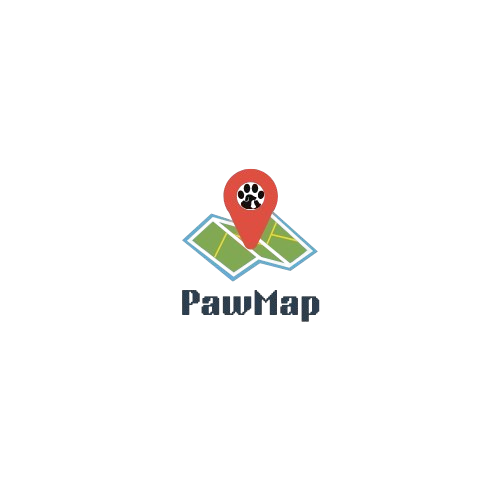

Emergency reports
Citizens submit dog and cat reports with location search, draggable map pin, photo review, urgency, and reporter verification.

Community rescue platform
PawMap helps citizens report stray, injured, or lost animals with a map pin and photo, while rescue volunteers, shelters, and CityVet teams coordinate the response in real time.
PawMap advertisement
Built from the app workflow
Citizens submit dog and cat reports with location search, draggable map pin, photo review, urgency, and reporter verification.
Rescue volunteers can set availability, receive open reports, share live location, and update mission stages through shelter handoff.
Shelters publish adoptable pets, review adopter applications, receive donations, and keep citizen histories organized.
Shelter teams can monitor animal tracker points, draw safe-zone boundaries, and flag out-of-bounds alerts.
Role-based access
Report animals, track rescue updates, apply as a rescuer or shelter admin, donate, and adopt.
Manage availability, accept rescue cases, navigate to scenes, update outcomes, and share location.
Coordinate dispatch, review reports, manage adoptions, teams, donations, tracker alerts, and shelter boundaries.
Oversee approvals, incidents, analytics, completed cases, personnel, governance, and platform notifications.
Install PawMap
When this website is hosted, the QR code automatically points to the APK file on the same site. You can also open PawMap directly if it is already installed on the device.
APK URL: GitHub release asset